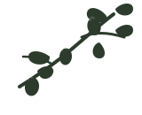

Ayvalık
Ayvalık çeşidi, meyvemsi aroması ve dengeli acılık-yakıcılık profiliyle Türkiye’de en bilinen zeytin türlerinden biridir.
Ayvalık odaklı zeytinyağı markaları, benzer bölgeler ve ilgili zeytin çeşitleri. 6 marka listesi.
Bu Kümedeki Markalar
Komili
1878'den bu yana Türkiye'nin en köklü zeytinyağı markalarından biri. Ayvalık merkezli, geniş ürün yelpazesi ile hem soğuk sıkım natürel sızma hem de riviera çeşitleri sunar....

Premium / Butik Öne ÇıkanMera Ovası
Butik üretim yapan artizanal zeytinyağı markası. Küçük partiler halinde, özenle seçilmiş zeytinlerden soğuk sıkım natürel sızma zeytinyağı üretir....
 Bölgesel / Yerel
Bölgesel / Yerel
Ayla Zeytinyağı
Ayvalık bölgesinin geleneksel zeytinyağı markası. Ayvalık çeşidi zeytinlerden soğuk sıkım natürel sızma zeytinyağı üretir....
 Bölgesel / Yerel
Bölgesel / Yerel
Ayvalık Yıldızı
Ayvalık'ın meşhur zeytinlerinden üretilen bölgesel marka. Ayvalık zeytinyağının kendine has meyvemsi aromasını yansıtır....
 Bölgesel / Yerel
Bölgesel / Yerel
Edremit Körfezi
Edremit Körfezi'nin eşsiz ikliminde yetişen zeytinlerden üretilen natürel sızma zeytinyağı. ZETAŞ olarak da bilinir....
Madra
Kuzey Ege bölgesinin kaliteli zeytinyağı markası. Edremit ve Ayvalık zeytinlerinden üretim yapar. Natürel sızma çeşitleri ile tanınır....